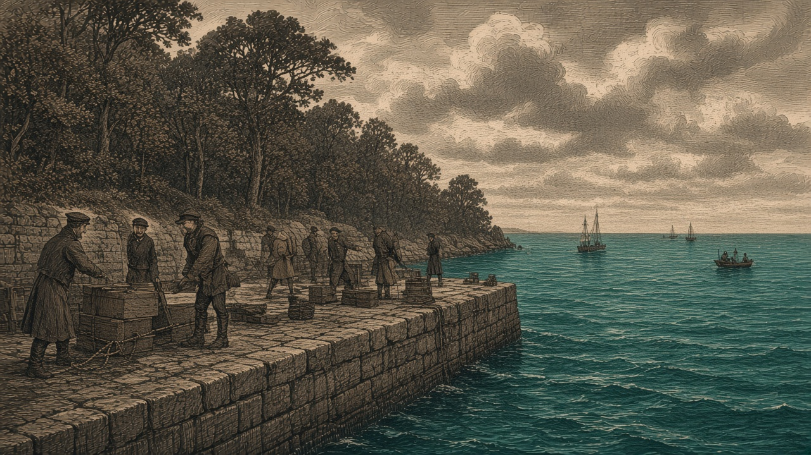

カペレナ、ノルステアに軍港
首都の大陸を出る
浅瀬が軍港に 南の森は第136期から王国領 アカピの都を離れ列強の側へ

【総合部】カペレナ王国は第138期、ノルステア大陸の東端に軍港を置いた。浅瀬だった（87,20）は軍港になり、王国はそこで造船を実行した。南に接する森（87,21）は第136期、中立の森を占領して以来、王国の土地である。首都カペナグラードはアカピ大陸にある。首都のある大陸の外に軍港を持つ形は、オリョルッル王国、泰平天国、なのです主義人民共和国、あろあろ国がすでに採っている。本紙はこれを列強の仲間入りとみる。
軍港の北と東は海、西は浅瀬、南は王国の森である。同じノルステア大陸の西には、藍岬共和国連邦の首都シネモルスクがある。王国がノルステアで押さえた土地は、この軍港と森の2区画である。
第136期の森に、今期の軍港
第136期、中立の森（87,21）はカペレナ王国の占領下になった。今も森のまま、所有者は王国である。今期、その北の浅瀬が軍港に変わった。王国はその軍港で造船を実行した。
「森の次に、船の着く石が来た」。岸で鎖をたぐる作業員は、新しい岸壁を見た。「都は西の大陸にある。ここは東の端だ」
礁の湯の港は王国へ
同じ期、王国は黒潮自治国の港、礁の湯（22,17）を占領した。港の施設は港のまま、旗が王国に替わった。陸上の戦果は黒潮2,600人、王国1,600人。これまでの戦果は黒潮110,000人、王国157,600人。詳報2面。
緑丘は軍港と兵站を失う
オリョルッル王国は緑丘公国の軍港（16,49）と兵站基地（17,46）を占領し、予備兵1,000人を略奪した。戦果はオリョルッル13,500人、緑丘3,500人。詳報3面。
泰平、アルガの町を占領
泰平天国はアルガリスト帝国の町（45,40）を占領した。首都アルガリストは帝国のままである。詳報4面。
火災で71,500人死亡
なのです主義人民共和国とチェス＝シロバキア共和国の火災で、71,500人が死亡した。チェスから胡椒帝国へは、仕事を求める8,100人が着いた。詳報5面。
カペナグラードはアカピ大陸にある。王国の新しい軍港は、海を隔てたノルステア大陸の東端に置かれた。第136期に占領した森と、今期の軍港は隣り合っている。森は足がかりだった。軍港は、船を出し入れする土地である。
オリョルッルはソルエクア大陸の都から、アカピ大陸とセントラ大陸へ領地を広げている。泰平はボレアリス大陸の都から、セントラ大陸とノルステア大陸へ出ている。なのですはアウストレア大陸の都から、セントラ大陸、ロンギード大陸、アカピ大陸に土地を持つ。あろあろはノルステア大陸の都から、ボレアリス大陸に土地を持っている。首都のある大陸の外へ出た国を、本紙は列強として扱ってきた。
カペレナは今期、その列に軍港を加えた。黒潮との戦争はアカピ大陸で続いている。礁の湯は王国の手に渡った。東の軍港は、その戦争とは別の海に開いた。
首都のある大陸の外に軍港を置く国を、本紙は列強の仲間とみる。